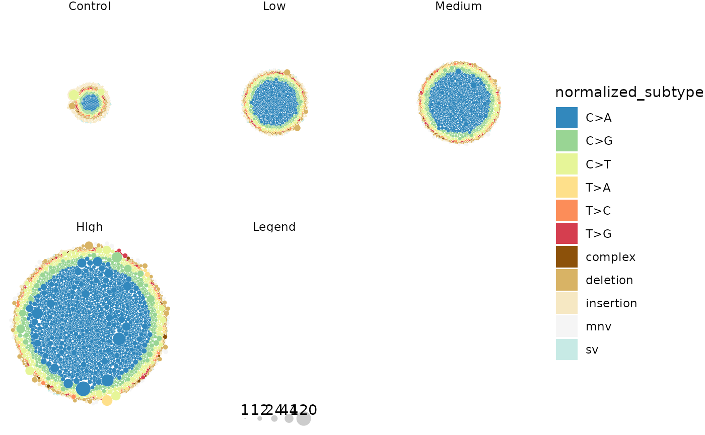
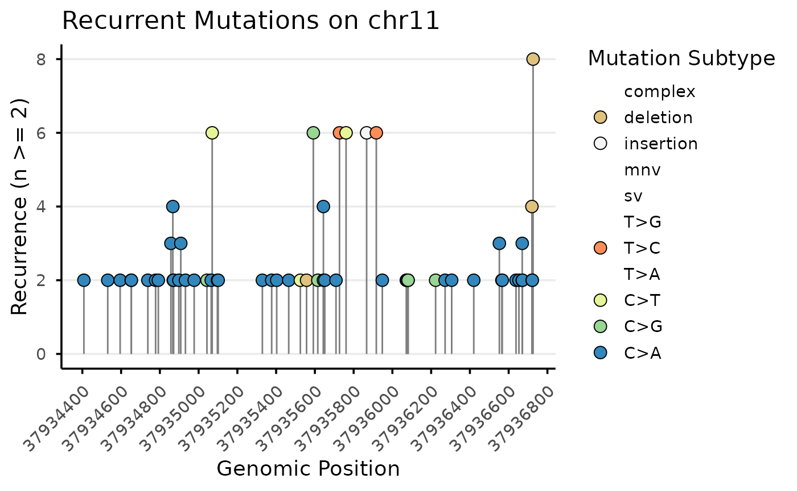

MutSeqR: General Visualization
Annette E. Dodge
Environmental Health Science and Research Bureau, Health Canada, Ottawa, ON, Canada.Matthew J. Meier
matthew.meier@hc-sc.gc.ca Source:vignettes/articles/General_Visualizations.Rmd
General_Visualizations.RmdLoad MutSeqR and Example Data
The example data consists of 24 mouse bone marrow DNA samples imported using import_mut_data() and filtered with filter_mut. Data was sequenced on the TS Mouse Mutagenesis Panel. Example data is retrieved from MutSeqRData, an ExperimentHub data package.
library(ExperimentHub)
# load the index
eh <- ExperimentHub()Bubble Plots
plot_bubbles is used to visually represent the
distribution and density of recurrent mutations. Each mutation is in a
given group is represented by a bubble whose size is scaled on either
the alt_depth or the vaf. Thus a highly
reccurent mutation is represented by a large bubble. These plots make it
easy to determine if MFmax is driven by a few highly recurrent mutations
versus serveral moderately recurrent mutations.
Plots can be facetted by user-defined groups, and bubbles can be coloured by any variable of interest to help discern patterns in mutation recurrence.
Example 1. Plot mutations per dose group, bubbles coloured by base-6 subtype
# load example data:
example_data <- eh[["EH9861"]]
plot <- plot_bubbles(
mutation_data = example_data,
size_by = "alt_depth",
facet_col = "dose_group",
color_by = "normalized_subtype"
)
plot
Multiplet mutations plotted per Dose. Each circle represents a mutation, coloured by mutation subtype. The size of the circle is scaled by the mutation’s alternative depth.
Radar Plots
plot_radar() is used to visualize mutation frequencies
across specified groups as a radar/spider plot. Plots may also be
facetted across a second group.
Example 2. Plot the mutation frequency for each of the 20 genomic targets of the TwinStrand Mutagenesis Panel. Facet panels by dose group.
First we will calculate the average MFmin for each genomic target across dose groups. We will also define the order in which the genomic targets should appear on our plot. We will arrange genomic targets based on their genic context so that we can visualize differences in mutation frequency driven be genic context.
mf <- calculate_mf(
mutation_data = example_data,
cols_to_group = c("sample", "label"),
retain_metadata_cols = c("dose_group", "genic_context")
)
label_order <- mf %>%
dplyr::arrange(genic_context) %>%
dplyr::pull(label) %>%
unique()
avg <- mf %>%
dplyr::group_by(dose_group, label) %>%
dplyr::summarise(mean_mf = mean(mf_min))
avg$label <- factor(avg$label, levels = label_order)
avg$dose_group <- factor(avg$dose_group,
levels = c("Control", "Low", "Medium", "High")
)
plot <- plot_radar(
mf_data = avg,
response_col = "mean_mf",
label_col = "label",
facet_col = "dose_group",
indiv_y = FALSE
)Average Minimum Mutation Frequency (mutation/bp) per genomic target. Plots are facetted by dose group.
plot## [1] 1This plot shows us that average mutation frequency increases with dose. Second, intergenic targets (targets on the left of the plot) show higher mutation frequencies compared to genic targets (targets on the right side of the plot).
Lollipop Plots
plot_lollipop()is used to visualize recurrent mutations.
Mutations are grouped across a user-specifed variable (ex. chromosome).
Mutations that occur above a specified recurrence threshold are plotted
by genomic position. Mutations are colored by their mutation subtype. Fo
each level in the specified group, a lollipop plot will be generated and
stored in a list.
*Example 3. For this example, we will only analyze mutations at the High dose group for simplicity. We will plot mutations that reoccur a minimum of 2 times. Plots are grouped by the genomic target (label).
example_data_h <- dplyr::filter(example_data, dose_group == "High")
plot_list <- plot_lollipop(
mutation_data = example_data_h,
min_recurrence = 2,
group_col = "label",
)
names(plot_list)## [1] "chr11" "chr16" "chr17" "chr3" "chr6" "chr1.2" "chr2" "chr14"
## [9] "chr18" "chr1" "chr10" "chr12" "chr15" "chr19" "chr4" "chr5"
## [17] "chr7" "chr8" "chr13" "chr9"
plot_list$chr11
Recurrent mutations found in High dose group plotted by genomic position. Plots are separated by genomic target.
Appendix
Session Info
## R Under development (unstable) (2025-11-18 r89035)
## Platform: x86_64-pc-linux-gnu
## Running under: Ubuntu 24.04.3 LTS
##
## Matrix products: default
## BLAS: /usr/lib/x86_64-linux-gnu/openblas-pthread/libblas.so.3
## LAPACK: /usr/lib/x86_64-linux-gnu/openblas-pthread/libopenblasp-r0.3.26.so; LAPACK version 3.12.0
##
## locale:
## [1] LC_CTYPE=C.UTF-8 LC_NUMERIC=C LC_TIME=C.UTF-8
## [4] LC_COLLATE=C.UTF-8 LC_MONETARY=C.UTF-8 LC_MESSAGES=C.UTF-8
## [7] LC_PAPER=C.UTF-8 LC_NAME=C LC_ADDRESS=C
## [10] LC_TELEPHONE=C LC_MEASUREMENT=C.UTF-8 LC_IDENTIFICATION=C
##
## time zone: UTC
## tzcode source: system (glibc)
##
## attached base packages:
## [1] stats graphics grDevices utils datasets methods base
##
## other attached packages:
## [1] ExperimentHub_3.1.0 AnnotationHub_4.1.0 BiocFileCache_3.1.0
## [4] dbplyr_2.5.1 BiocGenerics_0.57.0 generics_0.1.4
## [7] MutSeqR_0.99.3 htmltools_0.5.8.1 DT_0.34.0
##
## loaded via a namespace (and not attached):
## [1] DBI_1.2.3 bitops_1.0-9
## [3] httr2_1.2.1 rlang_1.1.6
## [5] magrittr_2.0.4 matrixStats_1.5.0
## [7] compiler_4.6.0 RSQLite_2.4.4
## [9] GenomicFeatures_1.63.1 png_0.1-8
## [11] systemfonts_1.3.1 vctrs_0.6.5
## [13] stringr_1.6.0 pkgconfig_2.0.3
## [15] crayon_1.5.3 fastmap_1.2.0
## [17] backports_1.5.0 XVector_0.51.0
## [19] labeling_0.4.3 Rsamtools_2.27.0
## [21] rmarkdown_2.30 ragg_1.5.0
## [23] purrr_1.2.0 bit_4.6.0
## [25] xfun_0.54 cachem_1.1.0
## [27] cigarillo_1.1.0 jsonlite_2.0.0
## [29] blob_1.2.4 DelayedArray_0.37.0
## [31] BiocParallel_1.45.0 parallel_4.6.0
## [33] R6_2.6.1 plyranges_1.31.1
## [35] VariantAnnotation_1.57.0 bslib_0.9.0
## [37] stringi_1.8.7 RColorBrewer_1.1-3
## [39] rtracklayer_1.71.0 GenomicRanges_1.63.0
## [41] jquerylib_0.1.4 Rcpp_1.1.0
## [43] Seqinfo_1.1.0 SummarizedExperiment_1.41.0
## [45] knitr_1.50 IRanges_2.45.0
## [47] Matrix_1.7-4 tidyselect_1.2.1
## [49] dichromat_2.0-0.1 abind_1.4-8
## [51] yaml_2.3.10 codetools_0.2-20
## [53] curl_7.0.0 lattice_0.22-7
## [55] tibble_3.3.0 Biobase_2.71.0
## [57] withr_3.0.2 KEGGREST_1.51.1
## [59] S7_0.2.1 evaluate_1.0.5
## [61] desc_1.4.3 Biostrings_2.79.2
## [63] pillar_1.11.1 BiocManager_1.30.27
## [65] filelock_1.0.3 MatrixGenerics_1.23.0
## [67] checkmate_2.3.3 stats4_4.6.0
## [69] rprojroot_2.1.1 RCurl_1.98-1.17
## [71] BiocVersion_3.23.1 S4Vectors_0.49.0
## [73] ggplot2_4.0.1 scales_1.4.0
## [75] glue_1.8.0 tools_4.6.0
## [77] BiocIO_1.21.0 data.table_1.17.8
## [79] BSgenome_1.79.1 GenomicAlignments_1.47.0
## [81] fmsb_0.7.6 fs_1.6.6
## [83] XML_3.99-0.20 grid_4.6.0
## [85] tidyr_1.3.1 AnnotationDbi_1.73.0
## [87] restfulr_0.0.16 cli_3.6.5
## [89] rappdirs_0.3.3 textshaping_1.0.4
## [91] S4Arrays_1.11.0 ggdendro_0.2.0
## [93] dplyr_1.1.4 gtable_0.3.6
## [95] sass_0.4.10 digest_0.6.39
## [97] SparseArray_1.11.2 rjson_0.2.23
## [99] htmlwidgets_1.6.4 farver_2.1.2
## [101] memoise_2.0.1 pkgdown_2.2.0
## [103] lifecycle_1.0.4 httr_1.4.7
## [105] here_1.0.2 packcircles_0.3.7
## [107] bit64_4.6.0-1 MASS_7.3-65